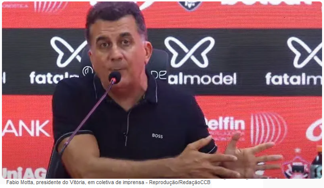
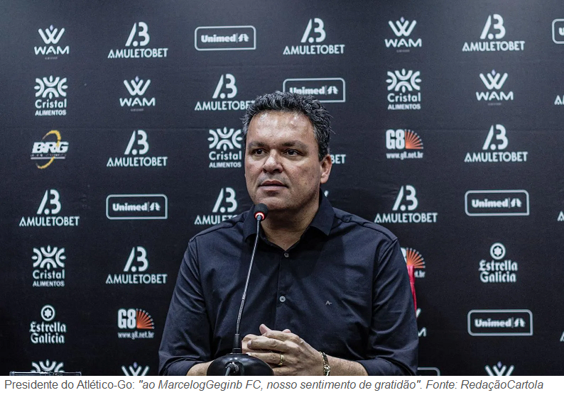

Campeonato de Cartola
A vitória no cartola é o sucesso do seu time!

Redação Cartola - 23/10/2024 - 07h56min
Rodada de nº 30 marcou o desligamento de mais três técnicos na divisão de Elite. A começar com Vitória da Bahia que, através de coletiva de imprensa concedida pelo presidente Fabio Motta, anunciou o demissão do cartoleiro "FC RPTRIUNFO".
Contratado ainda na rodada 20 como reforço para a disputa da Copa Libertadores; cartoleiro Alisson Freitas, pelo brasileirão, comandou o clube por 11 jogos, computando seis derrotas, cinco empates e apenas uma vitória (Vitória 3x0 Sport, rod.28), fechando um aproveitamento digno de "lanterninha" de qualquer competição: 18%. Encerrando a primeira fase da Libertadores na terceira colocação do grupo "B", treinador ainda recebeu uma sobrevida na Copa Sulamericana, passando pelos o playoffs ao derrotar o Sporting Cristal nos dois jogos. Entretanto, com a eliminação nas oitavas diante do irresistível Bragantino, líder isolado da divisão Nacional, direção não teve outra alternativa a não ser anunciar a saída do treinador.
No verdão do serrado o aproveitamento do técnico não foi muito diferente. 'LUIAN SPORTING CLUB', contratado na volta 18 após cumprir 3 rodadas de suspensão pela demissão ocorrida no Vitória da Bahia, somou tanto desclassficações na Copa do Brasil ( Oitavas contra o Palmeiras) quanto pelas oitavas da Copa Libertadores, nas duas derrotas diante do The Strongest.
Com as desclassifcações nas Copas, somadas ao péssimo desempenho no Brasileirão ( 13 jogos, 5 derrotas, 7 empates e 1 vitória, com 23% aproveitamento), direção do Goiás EC anunciou na manhã de hoje que "LUIAN SPORTING CLUB" não é mais técnico do mais querido de Goiás.
No Atlético Goianiense, embora a recente série de insucessos do metre "MarceloGeging" tenha alijado o clube do sonho de conquista tanto na Copa do Brasil (eliminado pelo Corinthians nas oitavas) quanto na Libertadores (queda diante do Atlético Nacional, pelas oitavas), o sentimento da torcida é de pura gratidão por aquele que é o maior ídolo do clube. Contratado ainda na distante rodada de número 13 de 2023, depois de levantar o título de Campeão Gaúcho com o Brasil de Pelotas, MarceloGebing veio na missão de conduzir o Goianiense no grande propósito daquele ano: subir para a divisã de elite 2024. Mas do que isso, cartoleiro trouxe o título inédito da Série B daquela temporada, além do Campeoanto Goiano de 2024. Nas primeiras cinco rodadas do brasileirão, posou como grande protagonista, liderando a divisão nacional com mão de ferro, mantendo o clube como protagonista do certame nacional até a rodada 16. Depois disso, passadas 14 rodadas, comando do treinador passou a não dar mais resultados, somando apenas 2 vitórias nos últimos 17 jogos, fazendo o rubro-negro do planalto médio despencar de líder isolado do brasileirão para a incômoda 12ª posição.  VOLTAR